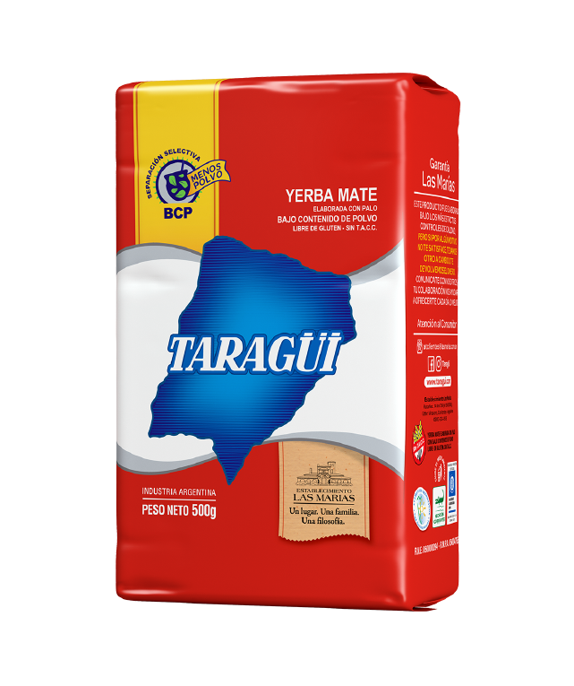

Esto no es solo yerba
Es Las Marias
Una de las yerbas mas degustadas a nivel global, por su excelencia en calidad y sabor, además de poseer un aroma cautivante.
Saber Más


Una de las yerbas mas degustadas a nivel global, por su excelencia en calidad y sabor, además de poseer un aroma cautivante.
Saber Más